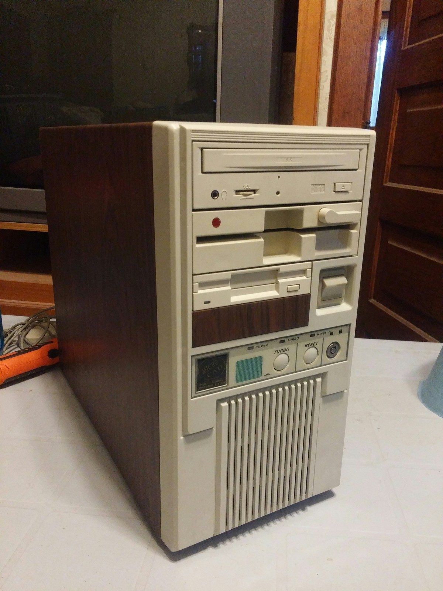

AYKUT GÜMÜŞ
HAKKIMDA
- 1985 yılı...Kasım ayı...İlk "Hello World" deyişim...
- 1997 yılında içimde dinmek bilmeyen bir bilgisayar sevdası ile aileme yalvar yakar ilk kişisel bilgisayarımı aldırışım...

486 İşlemcili PC Kasası
- İşte... Bilgisayar konusunda, özellikle donanım alanında öğrendiğim birçok bilgiyi ve teknik altyapıyı borçlu olduğum efsane kasa...
- İlk kod yazmayı MS-DOS ortamında kendi kendime öğrendiğim yıllar... Youtube yok, Udemy yok, hatta Google yok...
- İnternet olgusunun henüz evlere girmediği, hatta internet kafelerin bile hayatımıza yeni yeni girmeye başladığı yıllar...
- Akademik kariyerimi çok istememe rağmen bilgisayar ile ilgili bir bölümde okuyamamam...
- Ama hiçbir şey için geç değil diyorum.
- 35'inden sonra bu defa yazılım alanında bilgisayar dünyama kaldığım yerden devam etmek istiyorum.
- Bunu hem kişisel çalışmalarımla yapmak, hem de akademik olarak taçlandırmak niyetiyle çıktığım bu yolda;
- 2018 yılında ikinci üniversite kapsamında kaydolduğum Web Tasarımı ve Kodlama önlisans bölümünden 2020 yılında mezun oldum.
- Daha sonra DGS sınavında başarılı olarak, 2021 yılında kaydolduğum Yönetim Bilişim Sistemleri lisans bölümünün 3. sınıfında akademik hayatıma devam etmekteyim.
- Aynı zamanda Kodluyoruz Platformunda yer alan Frontend Patikasında eğitimlerime keyifle devam ediyorum.
- Bir günFrontend Developer olarak kariyer hayatıma yazılım sektöründe devam etmeyi hedefliyorum.
İLGİ ALANLARIM
- Sevdiğim Filmler
- Sevdiğim Diziler
- Behzat Ç
- Dağ Evi
- Game of Thrones
- Sevdiğim Kitaplar